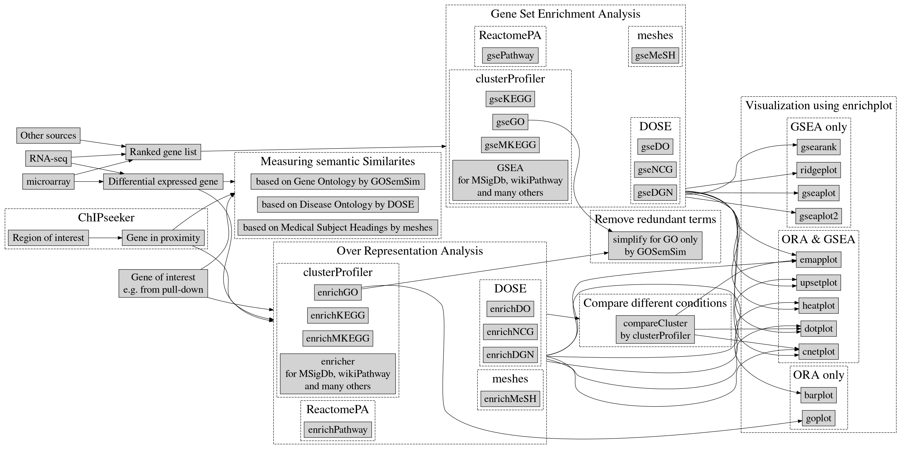

Биологические базы данных
1 Онтология. Введение.
В области философии онтология - изучение бытия и существования, которое включает категоризацию сущностей и их взаимоотношений. Так, онтология в биоинформатике - это формальная, явная спецификация общей концептуализации. Она представляет знания как набор концепций в рамках области и отношений между этими концепциями. Онтологии используются для моделирования знаний о группе элементов в структурированном и машиночитаемом виде, что облегчает обмен и анализ данных.
Области применения в биоинформатике:
- Стандартизация терминологии: Биологические данные обширны и неоднородны. Онтологии обеспечивают контролируемый “словарь”, который стандартизирует термины в различных базах данных и исследованиях, обеспечивая согласованность.
- Обмен данными: Использование общих онтологических основ позволяет легко интегрировать данные из различных источников. Такая совместимость крайне важна при всестороннем анализе данных.
- Вычислительное обоснование: Онтологии позволяют проводить автоматические “рассуждения” над биологическими данными. Они позволяют выводить новую информацию из существующих данных на основе определенных взаимосвязей.
- Облегчение анализа: Онтологии позволяют проводить комплексные анализы, учитывающие иерархическую и реляционную природу биологических концепций.
Примеры биологических онтологий:
- Онтология генов (Gene Ontology - GO): Обеспечивает стандартищированную классификацию функций генов у разных видов, структурированную по трем основным категориям: молекулярная функция, биологический процесс и клеточный компартмент.
- Онтология болезней (Disease Ontology - DO): Предоставляет стандартизированную онтологию для терминов человеческих болезней, обеспечивая последовательное описание и облегчая аннотирование болезней и биомедицинские исследвования.
- Онтология последовательностей (Sequence Ontology - SO): Определяет термины и отношения, используемые для описания характеристик и атрибутов биологических последовательностей, упрощая аннотирование генома.
2 Базы данных функциональных аннотаций
2.1 Онтология генов1 (GO)
Онтология генов – одна из наиболее широко используемых онтологий в биоинформатике.
Онтология компонентов состоит из трех компонентов:
- Молекулярная функция (Molecular Function - MF): Функции продуктов генов, происходящие на молекулярном уровне, такие как “связывание ДНК” или “ферментативная активность”
- Биологический процесс (Biological Process - BP): Более комплексные процессы, состоящие из множества индивидуальных молекулярных процессов, например “регуляция клеточного цикла” или “передача сигнала”.
- Клеточный компонент (Cellular Component - CC): Локализация на уровне субклеточных структур и макромолекулярных комплексов, таких как “ядро” или “рибосома”.
Структура
Термины GO организованы в направленный ациклический граф (DAG), где каждый термин может иметь несколько родительских и дочерних терминов, что необходимо для целостного описания биологических систем.
Возможны такие отношения между терминами, как:
- “is-a” - обозначает отношения подкласса.
- “part-of” - указывает на то, что один термин является компонентом другого. Причем, если B part-of A - существование процесса B гарантирует существование процесс A, а существование процесса A - не гарантирует существование B. Фактически, в математике это можно было бы записать, как \(B\Rightarrow A\).
- “has part” - указывает на то, что термин A всегда будет иметь часть B, но не все части B указывают на существование процесса A.
- “regulates” - указывает на то, что один процесс напрямую влияет на наблюдение и характер другого процесса или характеристики.

2.2 KEGG Pathways2

Киотская энциклопедия генов и геномов (Kyoto Encyclopedia of Genes and Genomes - KEGG) – это коллекция баз данных, посвященным геномам, биологическим путям, заболеваниям, лекарствам и химическим веществам.
Функционал KEGG Pathways включает в себя предоставление карт биологических путей, объединяющих геномную, химическую и системную функциональную информацию. Пути охватывают метаболические процессы, обработку генетической информации, обработку информации из окружающей среды, клеточные процессы и системы организма.

2.3 Reactome3
Reactome – это курируемая база данных путей и реакций в биологии человека, распостранающаяся на другие организмы с помощью ортологических сравнений.
Особенностями базы данных Reactome является акцент на подробных аннотациях молекулярных событий, включая сигнальные и метаболические пути. Каждая реакция проверяется и подтверждается литературой, что обеспечивает высокое качество данных.
2.4 UniProt4

Universal Protein Resource (UniProt) - это всеобъемлющий ресурс для данных о последовательностях белков и их биологических аннотаций. UniProt состоит из следующих компонентов:
- UniProtKB/Swiss-Prot: Вручную курируемые записи.
- UnoProtKB/TrEMBL: Компьютерно анализируемые записи, ожидающие полной ручной аннотации.
Аннотации в UniProt включают функциональную информацию, доменную структуру, посттрансляционные модификации, генетические варианты и многое другое.
2.5 Pfam5 и InterPro6

Pfam – база данных семейств и доментов белков, представленных в виде множественных выравниваний последовательностей и скрытых марковских моделей (HMM).
InterPro – объединяет несколько баз данных белковых сигнатур, включая Pfam, для классификации белков по семействам и прогнозирования наличия доменов и важных сайтов.
2.6 Система классификации PANTHER7
Система классификации PANTHER (protein analysis through evolutionary relationships) предоставляет информацию о семействах, подсемействах, путях и онтологиях белков. Особенностями являются: использование СММ для классификации белков, наличие статистических инструментов для анализа крупномасштабных геномных и протеомных данных.
2.7 Онтология фенотипов человека8
Онтология фенотипов человека (Human Phenotype Ontology - HPO) - стандартизированный словарь фенотипических отклонений, встречающихся при человеческих заболеваниях. Применяется для дифференциальной диагностики на основе фенотипов. Также HPO поддерживает геномную диагностику, связывая фенотипы с генетическими данными.
3 Методы анализа избыточной представленности и обогащенности
Целью анализа обогащения является определение того, демонстрируют ли заранее определенные наборы генов статистически значимые различия между двумя биологическими состояниями. Он помогает интерпретировать высокопроизводительные экспериментальные данные, такие как профили экспрессии генов, связывая гены с функциональными аннотациями.
3.1 Анализ избыточной представленности (Over-Representation Analysis - ORA)
Концепция: сравнивает долю интересующих генов, связанных с определенной категорией, с долей, ожидаемой случайно.
Статистические тесты:
- Точный тест Фишера: тест, используемый при небольшом объеме выборки для определения наличия неслучайных ассоциаций между двумя категориальными переменными.
- Гипергеометрический тест: вычисляет вероятность k успехов в n розыгрышах без замены из конечной популяции. В случае набора генов, гипергеометрический тест определяет вероятность принадлежности k генов из группы к определенной группе из онтологии.
Ограничения ORA:
- Не учитывает уровни экспрессии генов и величину изменений.
- Чувствителен к выбору списка генов.
- Может пропустить слабые, но согласованные изменения в наборе генов.
3.2 Functional Class Scoring (FCS)
Анализ обогащения набора генов (Gene Set Enrichment Analysis - GSEA) - вычислительный метод, определяющий существуют ли различия между априори определенный набор генов в двух биологических состояниях (фенотипах)
Концепция: Ранжирует все гены в наборе данных на основе метрик дифференциальной экспрессии (например, fold change, t-статистика). Оценивается, распределены ли члены набора генов случайным образом по всему ранжированному списку или находятся преимущественно в верхней или нижней части.
Преимущества:
- Обнаруживает слабые, но согласованные изменения в экспрессии генов внутри набора.
- Не требует произвольных пороговых значений для определения дифференциально экспрессируемых генов.
3.3 Методы, основанные на топологии путей.
Концепция: Включают информацию о взаимодействиях и связах между генами в рамкаъ путей.
Примеры:
Анализ влияния сигнальных путей (Signal Pathway Impact Analysis - SPIA): Сочетает ORA с топологией путей для выявления путей, на которые влияют изменения экспрессии генов. Учитывается, как перепредставленность дифференциально экспрессируемых генов, так и искажание пути в результате этих изменений.
Динамический анализ обогащения путей (Dinamycal Enrichment Analysis of Pathways - DEAP): Использует данные о временных интервалах или условиях. Учитывает динамическую природу биологических процессов.
3.4 Визуализационные методы
Графики обогащения - визуальное представление результатов обогащения набора генов. Показывает текущий балл обогащения и место генов в наборе в ранжированном списке.
Сети и карты путей - иллюстрируют взаимодействие между генами/белками в рамках биологических путей. Можно выделить ключевые узлы, которые могут иметь решающее знгачение в биологическом процессе.
4 R и онтологии.
4.1 clusterProfiler9

Предоставляет методы для статистического анализа и визуализации функциональных профилей генов и генных кластеров. Поддерживает различные онтологии и базы данных путей, включая GO, KEGG и Reactome.
Функции:
enrichGO(): выполняет анализ обошагащения GO терминами.gseGO(): Проводит GSEA с использованием терминов GO.enrichKEGG(),gseKEGG(): Аналогичные функции для путей KEGG.
Преимущества:
- Поддерживает несколько типов генных идентификаторов и методов аннотации.
- Предоставляет функции для визуализации результатов обогащения.
4.2 topGO10
Предназначен для анализа обогащения GO с учетом иерархической структуры отношений между терминами. Параметры Elim и Weight корректируют иерархическую структуру, уменьшая влияние родительских менее значимых терминов.
Преимущества:
- Устраняет зависимость между терминами GO, обусловленную структурой DAG.
- Уменьшает количество ложных идентификаций, возникающих из-за взаимосвязи терминов.
4.3 ReactomePA11
Предоставляет функции для анализа обогащения путей на основе базы данных Reactome.
Функции:
enrichPathway(): Выполняет ORA для путей Reactome.gsePathway(): Проводит GSEA для путей Reactome.
ReactomePA может быть легко интегрирован с clusterProfiler.
4.4 GOstats12
Предлагает инструменты для проверки избыточной представленности терминов GO и иных категорий.
Функции:
hyperGTest(): выполняет гипергеометрические тесты на избыточную представленность
Преимущества:
- Позволяет пользователям указывать условный параметр для корректировки иерархии GO.
- Позволяет использовать сторонние наборы терминов.
4.5 GSEABase13
Предоставляет структуры данных и методы для поддержки GSEA. Определяет классы для наборов генов и данных об экспрессии. Облегчает интеграцию определений наборов генов в рабочие процессы анализа.
4.6 biomaRt14
Предоставляет интерфейс к базам данных BioMart, таким как Ensembl. Позволяет извлекать геномные аннотации, последовательности генов, связывать идентификаторы из различных баз данных.
4.7 AnnotationDbi15 и OrgDb
Предоставляют основу для хранения и поиска данных аннотаций. Позволяют производить сопоставление идентфиикаторов генов с терминами GO, путями и друними аннотациями. Поддерживают запросы к аннотациям на основе списков генов.
4.8 pathview16
Предоставляет медтоды для визуализации данных об экспрессии генов на картах путей KEGG. Автоматически интегрируется с данными о путях KEGG. Генерирует диаграммы путей с наложенными значениями экспрессии генов.
4.9 DOSE17
Ориентирован на анализ семантики и обогащения онтологии болезней. Выполняет анализ обогащения наборов генов, связанных с болезнью. Поддерживает меры семантического сходства между терминами болезней.
4.10 enrichplot18
Предоставляет обширные методы визуализации результатов анализа обогащения. Генерирует точечные диаграммы, гистограммы, карты обогащения и другие графики.
5 Домашнее задание
Вам будет представлен список генных идентификаторов, а так же результат анализа дифференциальной экспрессии, для которых вам потребуется выполнить следующие шаги:
- Проаннотировать список генов с помощью идентификаторов других баз данных, таких ENTREZ, ENSEMBL и т.д., создать таблицу с полными названиями и описаниями группы генов.
- Произвести GO обогащение и GSEA, сравнить результаты.
- Произвести обогащение с помощью Pfam, выявить, существуют ли группы генов со схожими доменами. Объяснить, согласуются ли результаты с пунктом 2.
- Произвести обогащение с помощью KEGG Pathways, сравнить результаты с GO.
- Сделать предположение о том, какой биологический процесс исследовался в данном эксперименте, данные которого вы получили. Какие выводы можно сделать из полученных Вами результатов?
Footnotes
https://bioconductor.org/packages/release/bioc/html/clusterProfiler.html↩︎
https://bioconductor.org/packages/release/bioc/html/topGO.html↩︎
https://bioconductor.org/packages/release/bioc/html/ReactomePA.html↩︎
https://bioconductor.org/packages/release/bioc/html/GOstats.html↩︎
https://bioconductor.org/packages/release/bioc/html/GSEABase.html↩︎
https://bioconductor.org/packages/release/bioc/html/biomaRt.html↩︎
https://bioconductor.org/packages/release/bioc/html/AnnotationDbi.html↩︎
https://bioconductor.org/packages/release/bioc/html/pathview.html↩︎
https://bioconductor.org/packages/release/bioc/html/DOSE.html↩︎
https://bioconductor.org/packages/release/bioc/html/enrichplot.html↩︎